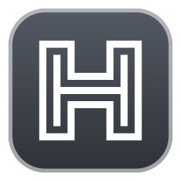

Hypomnema
A weekly planner, a daily journal and Markdown notes - in one window, in plain files you own.
Hypomnema (Greek ὑπόμνημα) was the notebook the ancient Greeks kept at hand: notes, reminders and reflections collected for one's own use. This is the same idea in software.
What it does
- Planner. A week of days and your own backlog lists side by side, with drag and drop, subtasks, priorities, colors, statuses and reminders.
- Recurring rules. Repeating tasks, dated events and birthdays defined in simple YAML files (cron schedules welcome). Missed ones carry over; nothing is ever duplicated.
- Journal. One Markdown entry per day from your own template, with "on this day" from earlier years.
- Notes. A Markdown knowledge base with wiki links, backlinks, full-text search and a trash.
- Calendar, History and Review to see what is coming and how the week went.
- Android app with the same data, synced through your own Google Drive.
Your data stays yours
Everything lives in a folder you choose, as Markdown, YAML and a local database - readable without the app, easy to back up. There is no account, no server of ours and no telemetry. Sync is optional and goes through your own Google Drive, in a private app folder the app cannot see past. Read the privacy policy.